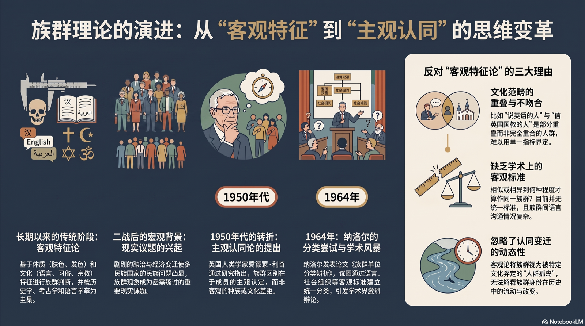

事实上是它的边缘让它看起来像个圆形。"
—— 王明珂 · 当代华语世界最具范式意义的历史人类学经典之一
八个概念，一次边缘之旅
这条思想的谱系上，考古学教我们追问知识如何成形，边界理论把认同安放在"线"上，集体记忆说记忆活在社会的框架里——华夏不是一份固定的名单，而是一道随资源竞争、记忆与失忆不断移动的边界。读懂边缘，才读懂"什么是中国人"。
什么是中国人
不问"华夏有什么"，而问"华夏的边界在哪里"。边缘视角取代定义式民族研究。
族群像高尔夫俱乐部
族群认同如俱乐部会员制：入会资格由边界决定，而非由成员的内在特征决定。
结构性失忆
族群靠"记得什么、忘记什么"维系自身——失忆与记忆同样是建构边界的工程。
英雄祖先与弟兄祖先
两种历史心性：阶序化的英雄叙事，与对等合作的弟兄叙事，对应两种社会形态。
一截骂一截
岷江上游的人群按河谷上下"一截骂一截"——认同在边缘处逐级滑动，没有铁板一块。
燃烧的木棍
火把照亮的只是木棍一端：典范历史照亮中心，边缘沉在黑暗里——研究就是把火把转向边缘。
人类生态
华夏是长程历史中的人类生态：资源竞争与分配环境，塑造了边界的形成与变迁。
边缘研究法
从周人族源、羌人身份到太伯奔吴——用边缘人群的史料，重写中心的历史。
图录 · 边缘的四种观看
四张主题图，把书中的范式之争与认同之变收进一方画面。




3D 造物记：从 0 到边缘
与本书同构的 3D 隐喻——发光的内核是"华夏"，青铜巨环是"边缘"，环绕的碎片是被记起与被遗忘的记忆，双碉楼矗立在羌族田野的边缘。以下工程从空场景开始逐块搭建，全程可复现。


他们如何谈论边缘
我们要探讨什么叫中华民族，最好的方法，不是正面地去对"中国人"下一个定义，而是想办法透过"中国人"这个族群的边界，来找它大概的意思。
这是一部对中文世界的人类学、民族学和历史学研究都产生了重要影响的著作……以十分新鲜并充满魅力的论证，为推进中国史的研究提供了新的范例。
本书为华夏一族通向自我认知的道路打开了一扇大门，远非就事论事者所能比拟。我由衷地向作者致敬！
他被称为学界的"毒药猫"，在打通历史、人类学、人文地理的扞格，在传授知识的同时，更重要的是让人开阔视野。
影像里的边缘
全网经核验的讲座与解读（2026-11 数据）。
| 平台 | 内容 | 频道 | 热度 | 直达 |
|---|---|---|---|---|
| Bilibili | 王明珂：三星堆的启示（北大文研院官方） | 北大文研院 | 32,860 播放 | 观看 ↗ |
| Bilibili | 【一席】王明珂：毒药猫与代罪羊 | 一席 | 15,009 播放 | 观看 ↗ |
| Bilibili | 《北方边缘——秦汉帝国的边疆扩展与边缘反噬》 | i 讲座 | 10,665 播放 | 观看 ↗ |
| Bilibili | 王明珂 × 罗新对谈：从边缘看文明 | key-lv | 7,248 播放 | 观看 ↗ |
| Bilibili | 《月明星稀——中原与其边缘的形成》 | i 讲座 | 5,433 播放 | 观看 ↗ |
| YouTube | 第十六届余英时先生历史讲座（王明珂教授） | 中大新亚书院 | 官方录像 | 观看 ↗ |
| 凤凰卫视 | 《开卷八分钟》梁文道整期推介本书（2008） | 凤凰网 | 文字实录 | 阅读 ↗ |
边缘，正被译向边缘之外
《华夏边缘》至今没有任何官方外译本。一项面向英语世界的首次全文翻译工程正在进行——让"边缘"的方法，抵达汉语之外。